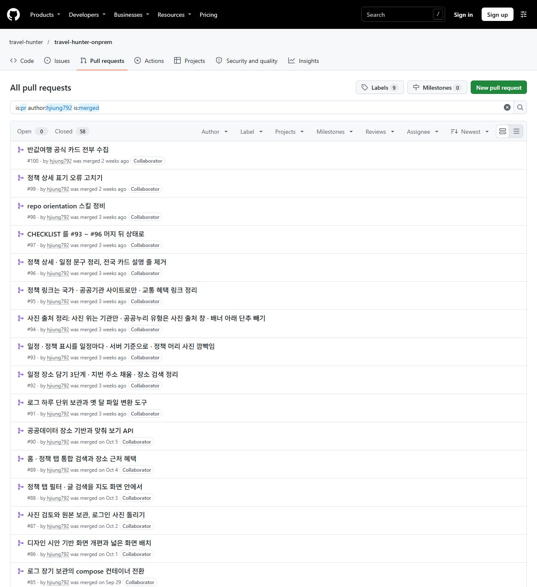
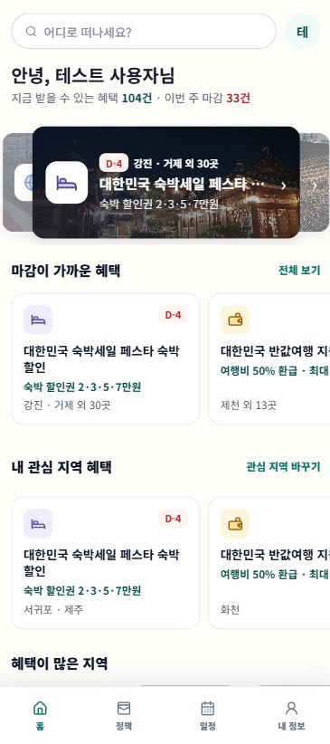
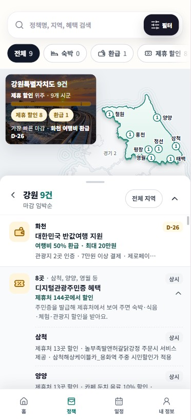
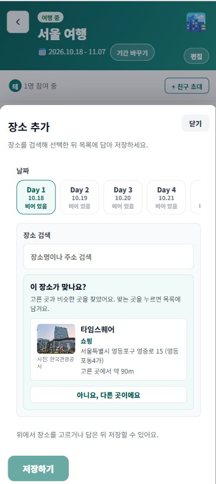
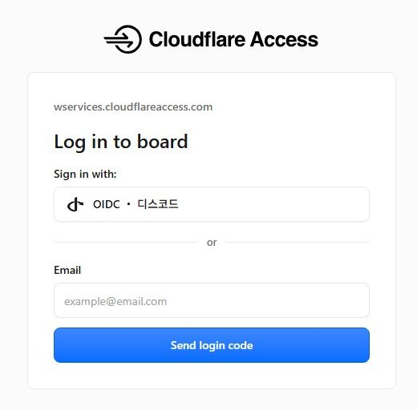

프로젝트
트래블헌터: 여행 AI 서비스 운영과 개발
국내 여행 일정을 짜면서 정부·지자체의 여행 지원 정책을 함께 보여 주는 여행 AI 플랫폼입니다. 중간에 합류해 풀스택 개발을 이어받았고, 온프레미스 서버의 운영·로그·데이터 작업을 맡았습니다.
자세히 보기 ▾
서비스와 역할
React·FastAPI·PostgreSQL(PostGIS)로 만든 서비스를 개발 서버와 운영 서버에서 Docker Compose로 운영합니다. 합류 초기에는 팀 문서를 분석해 온보딩 문서를 썼고, 이후 풀스택 역할을 인수해 기능 개발과 인프라 작업을 함께 했습니다. 개발에는 Claude Code를 보조로 썼고, 설계 판단과 결과 검증은 직접 했습니다.

로그 추적과 보관 구현
- 엣지 서버(Caddy)가 요청마다 ID를 만들고(클라이언트 값은 덮어써 위조 차단), 백엔드가 같은 ID를 구조화 로그와 응답 헤더에 남겨 요청 하나를 끝까지 따라갈 수 있게 했습니다. PR #81
- 백엔드가 멈춰 엣지가 502를 낼 때도 응답에 같은 ID를 실었고, ID 하나로 로그를 모아 보는 추적 스크립트를 만들었습니다. PR #81 PR #83
- 로그를 볼륨과 파일 회전으로 컨테이너 수명에서 분리하고, 네트워크 없이·읽기 전용·커널 권한 없이 도는 보관 컨테이너가 5분마다 새 로그를 날짜별로 쌓게 했습니다. PR #83 PR #85 PR #91
- 로그에서 IP를 가리고 SQL 입력값과 API 키 값이 남지 않게 했습니다. PR #81 키 마스킹 커밋
데이터 구현
- 운영 DB 이전: 운영 DB에 실제 가입 계정이 있는 것을 먼저 확인하고, 기존 DB를 남긴 채 임시 DB에 복원·검사한 뒤 이름만 바꿔 끼웠습니다. 전송 전후 SHA-256, 외래 키, 시퀀스를 대조했습니다. PR #54
- PostGIS를 도입하고, 국토교통부 건물·필지 데이터(로컬 전국 적재 기준 건물 1,434만 건, 필지 1,940만 건)를 앱과 분리된 적재 작업으로 넣었습니다. 적재가 실패하면 새로 만든 표를 지워 기존 데이터에 영향이 없게 했습니다. PR #92
- 차가운 DB에서 장소 첫 검색이 최악 7.6초 걸리던 것을, 앱 시작 때 표와 색인을 미리 읽어 두게 해 2.4초로 줄였습니다(로컬 측정). PR #92
엣지·CI 보안 구현 공동
- 관리자 화면을 전용 호스트로 분리했습니다. PR #67
- 팀원이 구성한 Jenkins 파이프라인의 보안을 진단해 11건을 찾고, 웹훅 서명 검증·크리덴셜 범위 축소·불필요한 포트 공개 제거 등 5건을 조치했습니다.
- Jenkinsfile에 테스트 단계와 동시 빌드 금지·타임아웃을 넣고, 외부 헬스체크 실패를 빌드 실패로 판정하게 했습니다. Jenkinsfile 커밋 PR #53
클라우드 이전 설계 설계
- AWS 2단계(EC2·RDS) 이전안과 3단계(EKS) 목표 구조를 설계하고, 월 비용안을 단가 기준으로 비교했습니다.
- 옮길 때 지금 코드에서 깨지는 지점 9가지를 코드 위치까지 찾아 정리했습니다.

기능 개발 구현
- 정책 수집과 자동 공개 게이트, 사진 저장·캐시, 일정 편집 개선 등을 PR 단위로 개발했습니다. PR #87




레포가 공개라 각 줄의 PR 링크로 실제 변경을 확인할 수 있습니다. 본인 PR 전체 보기
Terraform으로 클라우드 인프라 구축
수업에서 AWS 인프라를 코드로 다시 만드는 연습을 했고, 지금은 팀 프로젝트에서 AWS와 Azure 여러 리전으로 넓혀 구축하고 있습니다.
자세히 보기 ▾
수업 실습: AWS를 코드로 재구성 완료
매 실습마다 콘솔로 먼저 구성한 뒤 같은 인프라를 Terraform으로 다시 만들었습니다.
- VPC를 퍼블릭·프라이빗 서브넷으로 나누고 NAT, 라우팅, 보안 그룹을 연결했으며, 서버 관리용 SSH 접속은 Bastion 하나로 모았습니다.
- ALB와 오토스케일링을 2개 가용 영역에 걸쳐 올리고 헬스체크로 장애 서버가 빠지게 했으며, DB를 가장 안쪽 서브넷에 둔 3-Tier를 구성했습니다.
- 변수는 tfvars로 분리하고, 실습이 끝나면 destroy로 자원을 정리했습니다.
팀 프로젝트: T-Pot 멀티클라우드 허니팟 진행 중 2026.09 ~
지역과 클라우드에 따라 들어오는 공격이 어떻게 다른지 비교하려고, AWS와 Azure 여러 리전에 허니팟(공격을 받아 기록하는 미끼 서버)을 Terraform과 Ansible로 구축하고 있습니다.
- 팀에서 Terraform으로 AWS와 Azure 6개 리전에 센서 12대와 중앙 서버(Hive)를 세우고, Ansible로 설치와 연동을 자동화했습니다. 관리 포트는 관리자 IP만, 로그 전송 포트는 센서 IP만 허용했습니다.
- 학교 계정 제약에 맞춰 설계를 바꿨습니다. 리소스 그룹을 새로 만들 수 없어 그룹 하나 안에서 리전을 나눴고, 유럽 리전 차단으로 다른 리전을 골랐습니다.
- AWS 센서 6대의 실제 사용량(CPU 1~4%, 메모리 4.4~5.2GB)을 측정해, 메모리 8GB는 유지하고 스팟 인스턴스로 바꿔 비용을 줄였습니다.
- 리전·사양·예산을 정하고 확인 기준을 세우는 일을 맡았습니다. 코드는 AI 보조로 작성했습니다.
# 2026-10-12 역할 부여 권한 시험 (없는 대상으로 1회 시도, 생성되는 것 없음) $ az role assignment create --role Reader --scope .../resourceGroups/<학교 RG> ERROR: (AuthorizationFailed) ... does not have authorization to perform action 'Microsoft.Authorization/roleAssignments/write' # 2026-10-16 그룹 하나로 여러 리전을 쓸 수 있는지 (읽기 전용 조회) $ az group show -n <학교 RG> --query location koreacentral ← 그룹 위치는 메타데이터일 뿐, 자원 배치와 무관 $ az policy assignment list -g <학교 RG> (없음) ← 허용 리전 정책 없음 → 그룹 하나에서 리전별로 배치
# 2026-10-31 구축 검증: 13대 연동 상태 점검 (Hive 검색 엔진 조회 결과 요약)
센서 12대 + Hive 1대 13대 모두 최근 10분 안에 유입 확인
AWS 서울 2 · 싱가포르 2 · 시드니 2 센서당 24시간 31만~75만 건
Azure 한국 중부 2 · 동남아 2 · 호주 동부 2 센서당 24시간 157만~187만 건
누적 로그 문서 (10.22 ~ 10.31) 약 1억 3,363만 건 · 73.3GB
개인 웹서비스 운영 환경과 웹게임
자체 서버 + 클라우드 보안 게이트웨이, 외부 개방 포트 0개. 이 환경 위에서 직접 만든 실시간 멀티플레이 웹게임을 지인 전용으로 운영하고, 다음 웹게임을 개발하고 있습니다.
자세히 보기 ▾
운영 환경 운영 중
사용자 → Cloudflare(국외 차단, 로그인 인증) → 터널 → 자체 서버의 컨테이너. 도메인: wservices.app
- Cloudflare Tunnel(서버에서 밖으로만 연결하는 터널)로 공개해 공유기와 서버의 포트를 열지 않았습니다.
- Cloudflare Access(허용한 사용자만 통과시키는 인증 관문)로 이메일 일회용 코드와 Discord 로그인을 붙였습니다. Discord 로그인은 OIDC 중계를 Cloudflare Workers에 배포해 연결했습니다(오픈소스 discord-oidc-worker 기반).
- 국외 접속 차단(WAF), HTTPS 강제·TLS 1.2 이상, DNSSEC, 봇 차단을 적용했습니다.
- 컨테이너는 root가 아닌 사용자로, 읽기 전용으로, 커널 권한 없이 돌리고 메모리·프로세스 상한과 헬스체크를 걸었습니다. Trivy로 이미지를 점검해 취약점 22건을 0건으로 만들었습니다.
# compose.yaml 보안 설정 (웹게임 컨테이너, 발췌) ports: "127.0.0.1:8517:8517" ← 이 PC 안에서만 열림. 외부 공개는 터널로만 read_only: true ← 파일 시스템 읽기 전용 cap_drop: [ALL] ← 커널 권한 전부 제거 security_opt: [no-new-privileges:true] mem_limit: 512m pids_limit: 128 # Dockerfile USER node ← root가 아닌 사용자로 실행 HEALTHCHECK CMD wget -qO- http://127.0.0.1:8517/ # 2026-10-20 첫 검사 22건 (설치 도구 npm 21건 + zlib 1건) → npm·npx·corepack·yarn 삭제, apk upgrade # 2026-11-04 최신 취약점 DB로 다시 검사 $ trivy image --input splendor.tar --scanners vuln,secret splendor.tar (alpine 3.24.3) Total: 0 (UNKNOWN: 0, LOW: 0, MEDIUM: 0, HIGH: 0, CRITICAL: 0)

실시간 멀티플레이 웹게임 운영 중
- 2~4명이 각자 브라우저로 접속하는 카드 전략 게임입니다. 웹소켓 서버(Node·TypeScript)에서 방 만들기, 관전, 재접속을 처리하고, 플레이어마다 볼 수 있는 정보만 보냅니다.
- 규칙 엔진 테스트 89개(무작위 전체 게임 시뮬레이션 포함)를 두고, 방 상태를 Discord 현황판으로 알립니다.
성격 유형 웹게임 개발 중
- 로그인 없이 한 판 10분, 선택에 따라 결과가 나오고 공유 카드로 남는 모바일 웹게임입니다. 정적 빌드로 Cloudflare Pages에 올릴 준비를 하고 있습니다.
지인 전용 서비스라 허용한 사용자만 접속할 수 있습니다. 링크를 열면 로그인 화면에서 멈추는 것이 정상입니다.
개인 자동화 에이전트 운영
집 PC에서 브리핑, 게임 서버 관리, 재고 알림 등 에이전트 여러 개를 운영합니다. 에이전트마다 폴더 하나로 나누고, Docker 컨테이너형과 작업 스케줄러형 두 가지 운영 방식을 표준으로 정해 관리합니다.
자세히 보기 ▾
운영 표준
- 에이전트 하나는 폴더 하나입니다. 템플릿으로 새 에이전트를 만들고, 상태 확인 스크립트로 전체 상태를 한 표로 봅니다.
- 컨테이너형은 Compose 프로젝트 이름을 고정해 폴더 이름이 바뀌어도 컨테이너와 네트워크가 떨어져 나가지 않게 했고, 코드와 데이터를 나누고 큰 데이터는 볼륨에 둡니다.
- 스케줄러형은 상주 루프, 자동 재시작, 로그 회전을 갖춥니다. 로그가 261MB까지 쌓인 일을 겪은 뒤 오래된 회전본을 지우는 상한을 넣었습니다.
- 비밀값 파일은 git에서 빼고 파일 권한을 본인만으로 제한합니다.
운영 중인 에이전트
- 아침 브리핑: 매일 08:00 구독 소스를 모아 로컬 LLM(Ollama, Qwen2.5 14B)으로 요약하고 노트와 Discord로 보냅니다. 8월부터 81회 실행했습니다.
- 게임 서버 관리 봇: Discord에서 게임을 추가하면 Docker 이미지로 서버를 구축하고, 버튼으로 켜고 끄며, 허용된 콘솔 명령만 전달합니다. 포트 자동 할당과 볼륨 백업을 넣었습니다.
- 재고 알림 봇: 여러 쇼핑몰의 재고를 상시 확인해 품절에서 구매 가능으로 바뀌는 순간 텔레그램과 Discord로 알립니다. 일부 사이트는 실제 브라우저(Playwright)로 확인합니다.
- 학습 보조 봇: 옵시디언 노트의 인박스를 정리하고 Discord에서 질문에 답합니다.
수업 실습 (한국폴리텍대학, 2026)
리눅스 서버와 스토리지
Ubuntu Server 사용자·패키지·서비스 관리, mdadm RAID 6 구성, ext4 포맷과 fstab 자동 마운트, 백업 자동화.
Windows 서버 취약점 점검 스크립트
주요정보통신기반시설 기준 항목을 배치 스크립트로 조회해 양호/취약을 판정하고 보고서로 출력했습니다.
네트워크와 탐지
패킷트레이서로 2·3계층 네트워크 구성, Snort 탐지 실습.
학력
| 한국폴리텍대학 서울정수캠퍼스 | 클라우드컴퓨팅과 (하이테크 과정) | 재학 (취업 시 수료) | 2026.03 ~ |
| 학점은행제 | 학사 (컴퓨터공학) | 학위 취득 | 2025.08 |
| 동국대학교 DUICA(구 전산원) | 컴퓨터공학 2년제 | 수료 | 2020.03 ~ 2021.12 |
자격증
| 리눅스마스터 2급 | 한국정보통신진흥협회 | 2026.07 |
| NCP (NAVER Cloud Platform Certified Professional) | 네이버클라우드 | 2026.06 |
| NCA (NAVER Cloud Platform Certified Associate) | 네이버클라우드 | 2026.03 |
| 네트워크관리사 2급 | 한국정보통신자격협회 | 2021.09 |
기술
| 분야 | 내용 | 근거 |
|---|---|---|
| 클라우드 | AWS(VPC, EC2, ALB, 오토스케일링), Azure VM, 멀티 리전 구성 | 프로젝트 실습 |
| IaC·구성 관리 | Terraform(원격 상태, tfvars), Ansible(동적 인벤토리) | 프로젝트 실습 |
| 컨테이너·운영 | Docker Compose, Caddy, 구조화 로그·요청 ID 추적, 컨테이너 권한 최소화, Trivy | 프로젝트 개인 |
| 엣지 보안 | Cloudflare Tunnel·Access·WAF·DNSSEC, Workers 배포 | 개인 |
| DB | PostgreSQL 백업·복원·이전, PostGIS, 색인 튜닝 | 프로젝트 |
| CI | Jenkinsfile 보강, 파이프라인 보안 진단 | 프로젝트 |
| 리눅스·네트워크 | Ubuntu Server, mdadm RAID, 2·3계층 네트워크, Snort | 실습 |
| 개발 | Python(FastAPI), TypeScript(React, Node.js) | 프로젝트 개인 |
| 자동화·AI | 로컬 LLM(Ollama), Docker Compose 에이전트, Windows 작업 스케줄러, Discord 봇, Playwright, Claude Code | 개인 |
병역
육군 병장 만기 전역 (2023.05 ~ 2024.11)